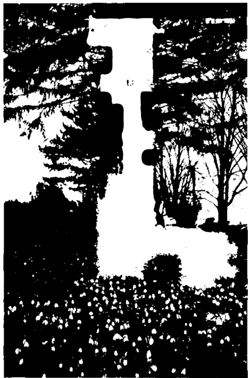

Spring And Summer Flowers From Bulbs. Part 2
Description
This section is from the book "Flower Gardening", by H. S. Adams. Also available from Amazon: Flower gardening.
Spring And Summer Flowers From Bulbs. Part 2
Of hyacinths there is less to be learned. Only the familiar Hyacinthus orientalis, single and double, is generally available in gardens north of Washington, but with protection it is possible to grow the dainty Roman hyacinth in the open ground near New York. What is chiefly to be learned about hyacinths proper is that it is idle to keep on in the old way of making mixed plantings; no bulb loses more by such treatment. There is no excuse for this; named varieties of every hue, that have stood the test of time, are to be had and for low spring massing in a solid tone nothing is better. This is a more expensive plan than buying by color alone, but safer, as in the latter instance there is likely to be a conglomeration of shades that makes for indefiniteness of tone. A third species, H. amethystinus, is a dainty alpine hyacinth that ought to be better known. There is now a white variety of it.
The feathered, grape, musk and starch hyacinths are not of the same genus; they are muscari. One of them, M. azure urn y was formerly Hyacinthus azure us. The deep blue grape hyacinth (M. Botryoides) called bluebell in New England, is the only familiar one here and even that is much more of a stronger than it was years ago; as often as not it is an "escape" in the grass. It is fine for garden massing and so are the light blue and "pearls of Spain" (white). The Trebizond starch hyacinth Heavenly Blue has the gentian color and is very lovely in the garden. The ordinary starch hyacinth (M. neglectum via jus) and the Caucasian starch hyacinth (M. paradoxum) are blue-black. The fragrant musk hyacinth is M. mo s chat urn ma jus, the tassel hyacinth M. comosum and the plume or ostrich feather hyacinth M. plumosum. The last has been developed into mauve plumes of great size, worthless to the garden save as curiosities.
Old gardens knew a few kinds of narcissus. The common ones were the yellow "daffy" (TV. Tele-monius plenus, or van Sion), the orange and yellow "Butter and Eggs" (TV. incotnparabilis ft. pL), the "jonquil" (TV. alba plena odor at a) and the poet's narcissus (TV. poeticus), all but the last double. Only the first has begun to hold its own and the chief newcomer is the single yellow daffodil (N. pseudo-narcissus), generally in only a slight improvement of the species form.
Yet this is the day of the daffodil—to use the most convenient English name for covering the genus Narcissus. In England there is a daffodil craze, with no parallel save the historic tulip mania in Holland. It is said that £50, about $242, is the top-notch price for a single bulb. In any event prices in excess of ten dollars are tolerably common; some of the 1912 quotations for novelties were Challenger, $162; Michael, $90; Empire, Jasper and Sheba, $76, and Czarina and Sir Galahad, $50.
It is doubtful if the craze will ever cross the Atlantic. Meanwhile daffodils than which none could ask anything more beautiful are not in every garden, though sold as low as half a dollar a dozen. Two of the best single trumpet daffodils, Emperor (all yellow) and Empress (yellow with a white perianth) cost no more than that and will be just as satisfying to the general run of flower-lovers as costly bulbs are to the ardent British collector. The poet's narcissus and its yellow counterpart, N. incompatah His Barrii conspicuus, which cost less than half as much, are two more of the best. And these are only four selections of cheap single kinds. The natural hybrid of the poet's narcissus, N. biflorus, is very beautiful but is more common from Delaware southward. The double white jonquil, better named now gardenia daffodil, is good for massing but rather capricious as to blooming. It exceeds in beauty the four other double ones, Van Sion, "Butter and Eggs" and the remaining two incomparabilis variants, Orange Phoenix ("Eggs and Bacon") and Silver Phoenix ("Codlins and Cream").
There is a stretch of thin grass that is not cut early, naturalize some of the bulbs.
The clustered nosegay daffodil (N. polyanthus) has beautiful forms for the garden, but they are tender and require protection. Their poetaz hybrids are less tender. The Chinese sacred lily (N. orient alts) is not grown in the open in cold climates. The true jonquils are hardy and it is unfortunate that they have not come to the front more. Both the campernelle jonquil (N. odor us) and the smaller kind (N. Jonquilla) are exceed ingly graceful yellow flowers. Of the small species called daffodils the hoop petticoat (Bulboco-dium citrinus) and the rushleaved B. gracilis, last of all to bloom, are deserving of close acquaintance. The angel's tear daffodil (Triandrus alb us) is not very hardy.
The crocus is as much of a surprise as the tulip and daffodil to those who find that it is no longer merely a crocus. So many crocus species have come into cultivation that they are the subject of a very remarkable monograph. Nor do they continue to suggest only spring; there are autumn-blooming and winter-blooming ones, so that in some English gardens it is possible to have crocus color from August to March without any interruption. That is work for the collector; the thing for others to do is to get a better understanding of the superiority of the new named spring crocuses over the old. As with hyacinths, it is inexcusable to buy mixtures when there are such fine named varieties, with larger bloom, for producing sheets of early spring color—at about one cent a bulb by the hundred. These improvements of C. vemus and C. aureus answer ordinary garden purposes so well that there is no special need of extending one's knowledge of the spring-blooming species.
Of the host of other spring bulbs the fritillaries have two very hardy representatives that have been gradually disappearing from old gardens without bring asked to enter new ones. Yet one of these, the crown imperial (Fritillaria imperialis) is a grand and stately figure in the hardy garden in spring; the yellow, orange or red bloom is rich in color and the form of the plant unique. The other is the snake's head fritillary, or guinea-hen flower (F. meleagris). The white or nearly white kinds are best for garden pictures; the dull purple shades do not show up well at any distance. There are many other charming fritillary species, but most of them are for specialized culture.
Continue to:
- prev: Chapter XIV. Spring And Summer Flowers From Bulbs
- Table of Contents
- next: Spring And Summer Flowers From Bulbs. Part 3